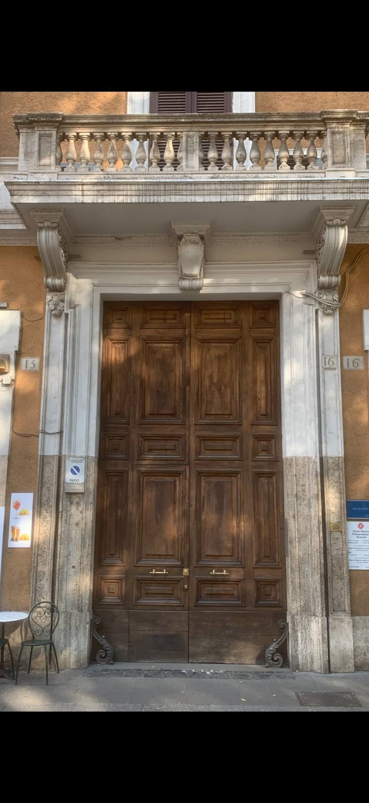
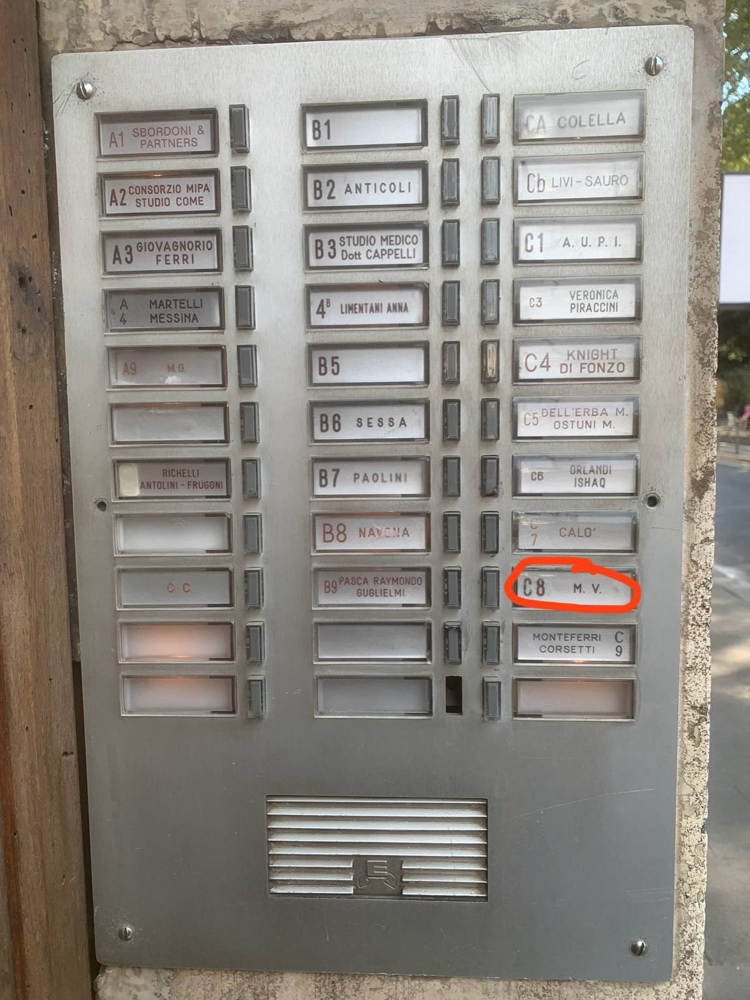
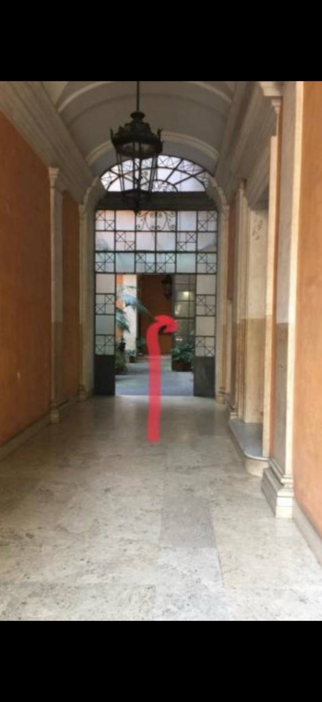
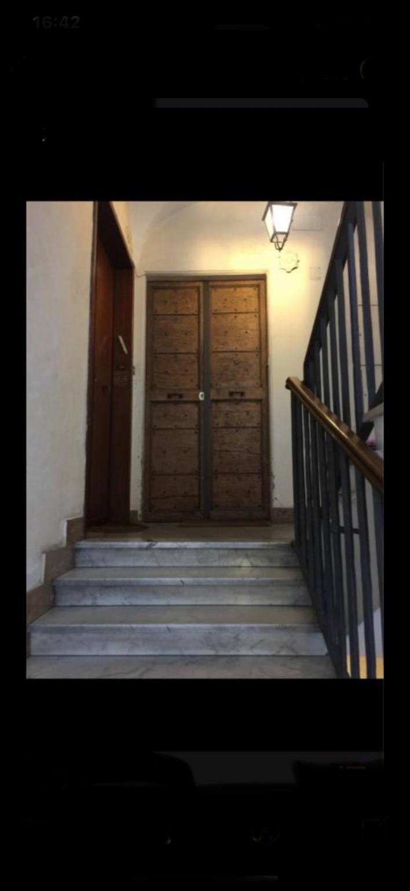

Arriving at the Building
When you reach Via Arenula 16, look for the large wooden entrance door with the number 16 engraved on the stone frame.

Using the Intercom
Press C8 on the intercom panel.

Entering the Main Door
Press the button below, then push the door once it is unlocked.
``` ➜ Open Building DoorFor security, each key is single-use and expires after 24 hours. If it expires, press the button again to generate a new one-time key.
Inside the Building
Walk straight across the corridor into the courtyard, then take the stairs on your right after the elevator.
The elevator is strictly private — we are not allowed to use it.

Your Apartment Door
Attached to the handle you will find a grey lockbox. The code is 6-7-9-3. Open the cover, take the keys, close the cover again, and scramble the numbers.

Need help?
Call or WhatsApp: +39 335 524 5756